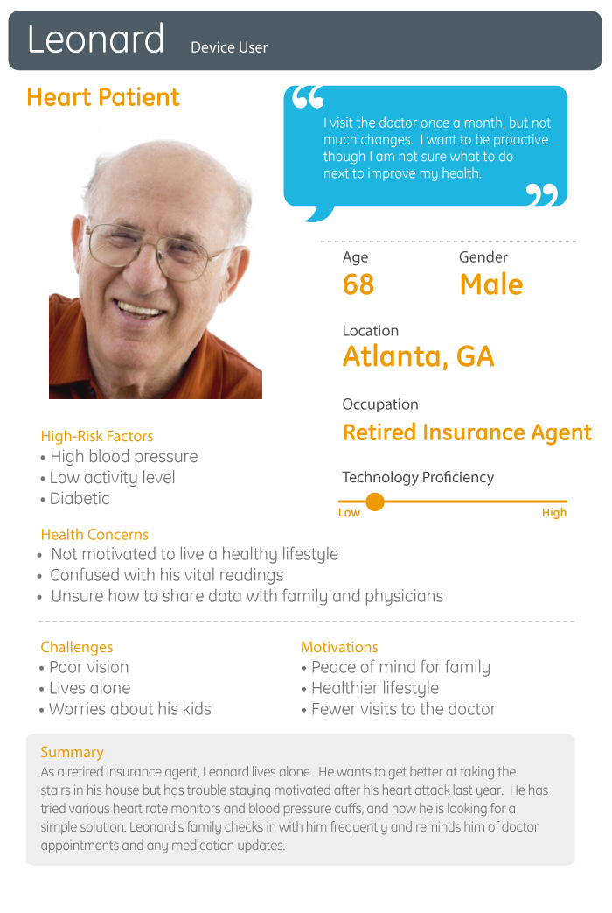

Pulseband
Pulseband is a concept wearable device that monitors blood pressure, heart rate, steps, and sleep patterns among other vitals. The proposed wristband accommodates people with certain heart conditions, and it can alert wearers who may be at risk of a cardiac episode. Our team of 4 was tasked with the design of a mobile companion application for the Pulseband device and a marketing webpage to promote the product and complementary services.
-
Role
UX Researcher, Interaction Designer
-
Deliverables
Research Plan, Competitive Analysis, User Personas, Application Map, Task Flows, Wireframes, Prototype
-
Client
DESIGNATION Labs
Research
Following the design thinking approach, my team set out to better understand our potential users. We needed to learn more about those who are affected by heart conditions. We brainstormed open questions and assumptions to identify our key research objectives, and I then mapped those objectives to suggested methods to create our research plan.
As a team, we heard incredible stories, from subject matter experts, individuals with heart conditions, loved ones of heart patients and athletes who are loyal to wearables. During the interviews I conducted, my participants engaged in card sorting and co-creation activities to help us prioritize content and design the preliminary navigation.
We synthesized our research findings, with the help of an affinity map, to identify key motivations, challenges and aspirations among our user groups. Based on our research, we created 3 primary personas to guide our design decisions going forward.
Personas
Our design was centered around families, and our mission was to encourage healthy behavior while eliciting happy and serene emotions.
- 
User Experience
During the next phase of the project, we focused on the interaction design. We ran a workshop to prioritize features and outline the content hierarchy to help our users’ achieve their goals.
I created an application map to provide a holistic view of the top-level navigation and content hierarchy.

Over 60 annotated wireframes were created to outline the navigation, layout and interaction across the mobile app. We found that our potential users wanted to stay informed about the heart health of close family members as well as their own.
We strived to keep the experience humanistic by providing personalized insights based on the users’ habits and behaviors.
UI Design
One of my team members created the comprehensive designs for the Pulseband companion app screens. We worked together to explore ways to visualize complex data, so both Pulseband wearers and their family members could stay current on heart health vitals.
Results
To promote the Pulseband and its companion app, we also designed and built a marketing webpage. I created the marketing page wireframes to provide direction for our visual designer who created the comprehensive design.
We coded the page as a team by defining the HTML syntax and CSS class structure, then dividing up the sections and compiling the final site. Our team worked very effectively together, and we were proud of the final product.